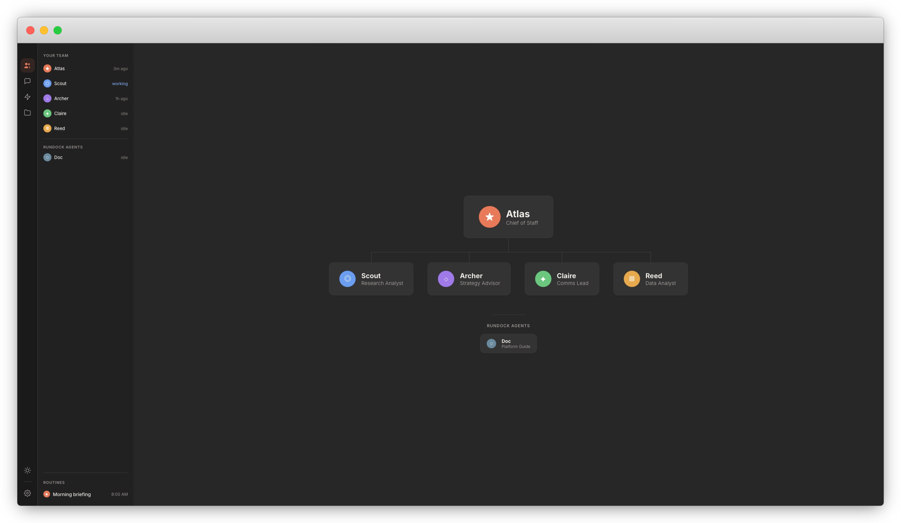

Get your own AI team
Point Rundock at your workspace and get a team of AI agents built around what you do. A researcher, a writer, a strategist. They show up on an org chart and work together. No coding, no configuration.
For Apple Silicon Macs (M1 or later)

AI agents are powerful. Using them shouldn't be hard.
Most AI agent tools are built for developers. Rundock is built for everyone else. Open your workspace, meet your team, and start delegating.
Your team at a glance
Your team
See your agents on an org chart with roles, capabilities, and status. Click any agent to view their profile. The chart scales to any team size.
Conversations
Talk to any agent through the browser. Ask your strategist a question, then switch to your writer. Agents delegate to each other mid-conversation when the task calls for it.
Skills
Each agent has specialised skills: research workflows, writing processes, analysis frameworks. See the full map of who can do what.
Files
Your agents read and write files in your workspace. Browse, preview, and edit those same files with full markdown rendering.
No lock-in
Your agents and skills are standard Claude Code files. They work in Claude Code, Claude.ai, the Claude Agent SDK, and any tool that supports Anthropic's agent format. Rundock adds the team layer on top. If you stop using Rundock, your agents and skills go with you. No export needed.
Your data never leaves your computer
Browser
Visual interface for your agent team
Local server
Discovers agents, manages conversations
Claude Code
AI processing via Anthropic's API
What people are saying
Rundock removed the intimidation of Claude Code. You stop thinking in coding terms and start thinking in team terms. It's like having your own virtual team of highly paid experts, running in parallel. I've built my entire business DNA in the box.
Get started
Install Claude Code
Install Claude Code and sign in. Requires a Claude Pro or Max subscription.
Already have it? Skip to step 2.
Download Rundock
Download the desktop app, drag it to Applications, and open it. Rundock checks for Claude Code on first launch.
For Apple Silicon Macs (M1 or later)
Prefer the terminal? git clone https://github.com/liamdarmody/rundock.git && cd rundock && npm install && npm start
Choose a workspace
Pick a folder or create a new one. A workspace is any folder where you keep your work: documents, research, projects.
Build your team
Doc, the built-in guide, analyses your workspace and proposes an agent team. Say go, and your agents appear on the org chart. Start a conversation and put them to work.